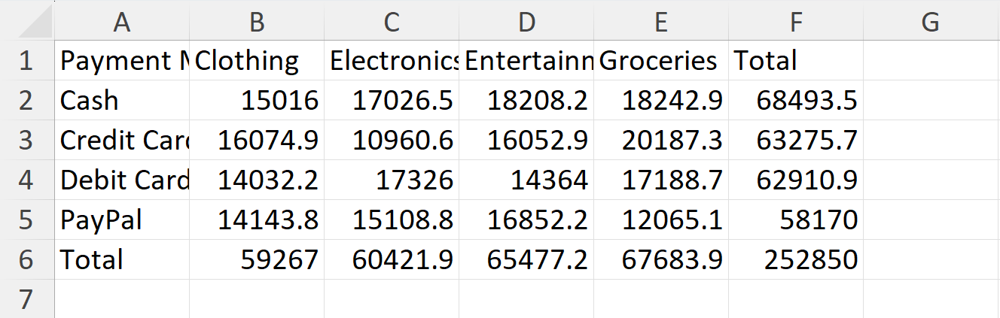
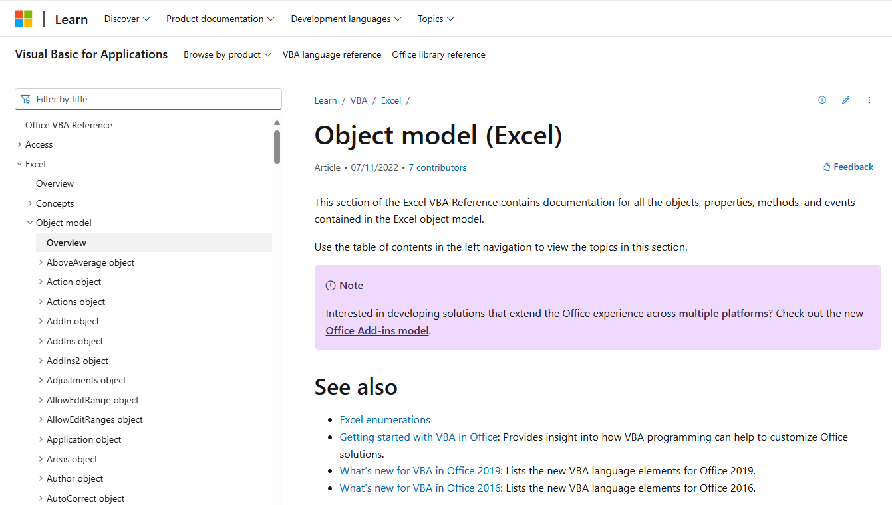
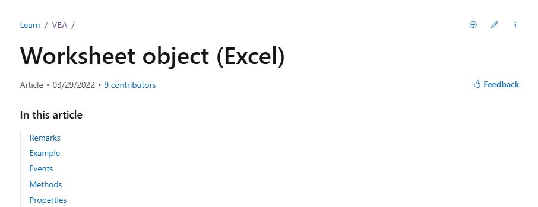
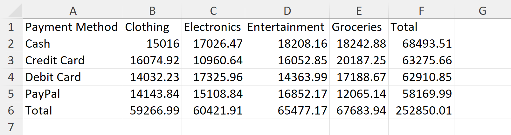
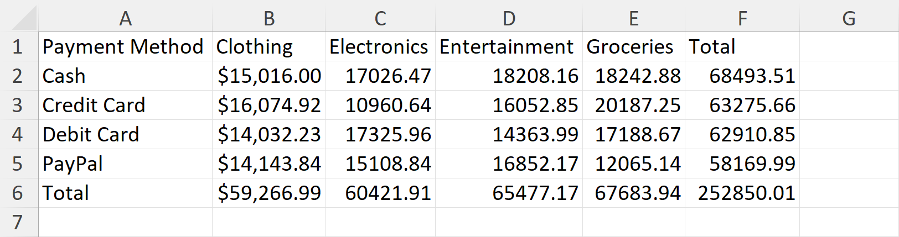
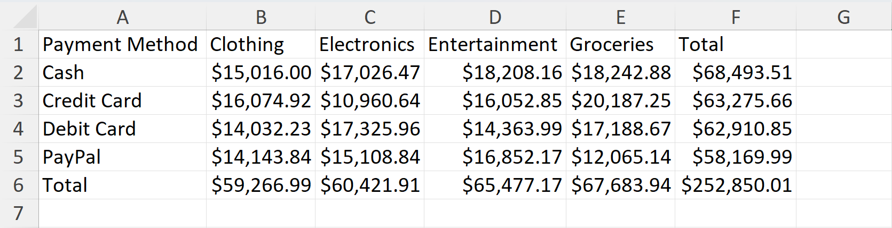
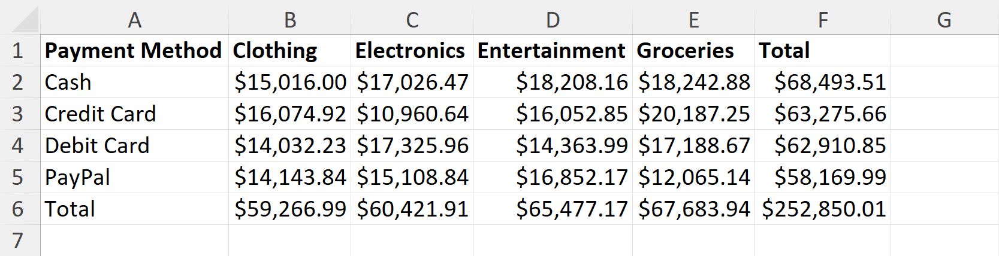
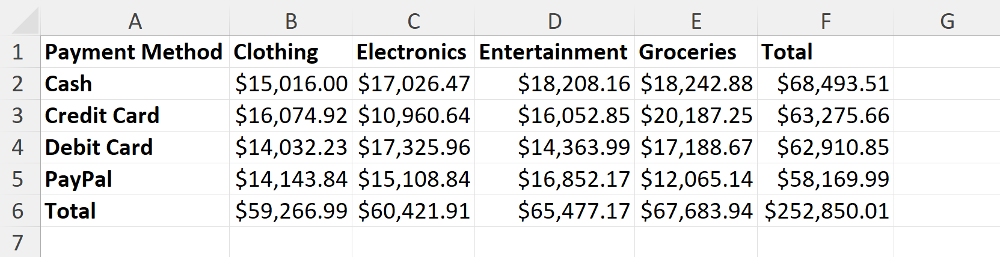
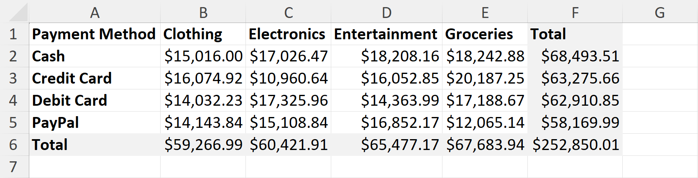

import pandas as pd
import numpy as np
import xlwings as xw
import osIn this post, I’m going to overview how to use Python’s xlwings and pywin32 libraries to produce formatted, human-readable tables in Excel. Beyond basic uses of xlwings, I’ll overview how to leverage pywin32 and the .api attribute to interact directly with the Excel object model using VBA-like Python code. The apporach allows one to produce highly custommizable Excel tables that should satisfy any audience that prefers formatted spreadsheet output.
Alongside this blog post, I’ve been developing an excel submodule in my swiss-code package, with various wrapper functions for xlwings and pywin32. I’ll showcase some of those functions here as well.
Problem Setup
Code
def simulate_df(num_transactions=1000):
np.random.seed(1)
customer_ids = np.random.randint(1000, 5000, num_transactions)
transaction_amounts = np.round(np.random.uniform(5, 500, num_transactions), 2)
payment_methods = np.random.choice(["Credit Card", "Debit Card", "PayPal", "Cash"], num_transactions)
categories = np.random.choice(["Electronics", "Clothing", "Groceries", "Entertainment"], num_transactions)
transaction_dates = pd.date_range(start="2024-01-01", periods=num_transactions, freq="D")
data = {
"transaction_id": range(1, num_transactions + 1),
"customer_id": customer_ids,
"amount": transaction_amounts,
"payment_method": payment_methods,
"category": categories,
"date": transaction_dates
}
df = pd.DataFrame(data)
return dfSay we have a dataset of customer transactions at a department store. I simulated this data arbitrarily.
df = simulate_df()
df.head()| transaction_id | customer_id | amount | payment_method | category | date | |
|---|---|---|---|---|---|---|
| 0 | 1 | 2061 | 177.75 | Debit Card | Electronics | 2024-01-01 |
| 1 | 2 | 1235 | 33.20 | Credit Card | Clothing | 2024-01-02 |
| 2 | 3 | 4980 | 118.26 | Credit Card | Groceries | 2024-01-03 |
| 3 | 4 | 2096 | 333.73 | Debit Card | Entertainment | 2024-01-04 |
| 4 | 5 | 4839 | 251.14 | Credit Card | Electronics | 2024-01-05 |
Let’s imagine the case where a stakeholder asks for a report on total dollars transacted, broken down by key categories and payment method. It’s fairly straightforward to use pandas to make an attractive pivot table that can serve as such a report, complete with human-readable, title-cased indices and columns. In this case, I’ve aggregated the total dollars spent, dissagregated by payment method and category of good.
dollars_by_method = df.pivot_table(
index="payment_method",
columns="category",
values="amount",
aggfunc="sum"
)
dollars_by_method.index.name = "Payment Method"
dollars_by_method.columns.name = 'Category'
dollars_by_method| Category | Clothing | Electronics | Entertainment | Groceries |
|---|---|---|---|---|
| Payment Method | ||||
| Cash | 15016.00 | 17026.47 | 18208.16 | 18242.88 |
| Credit Card | 16074.92 | 10960.64 | 16052.85 | 20187.25 |
| Debit Card | 14032.23 | 17325.96 | 14363.99 | 17188.67 |
| PayPal | 14143.84 | 15108.84 | 16852.17 | 12065.14 |
Some users may prefer that the pivot table also include subtotals, and we can flexibly add those for both independent variables by leveraging the axis argument in df.sum()
dollars_by_method.loc[:, 'Total'] = dollars_by_method.sum(axis=1)
dollars_by_method.loc['Total', :] = dollars_by_method.sum(axis=0)
dollars_by_method| Category | Clothing | Electronics | Entertainment | Groceries | Total |
|---|---|---|---|---|---|
| Payment Method | |||||
| Cash | 15016.00 | 17026.47 | 18208.16 | 18242.88 | 68493.51 |
| Credit Card | 16074.92 | 10960.64 | 16052.85 | 20187.25 | 63275.66 |
| Debit Card | 14032.23 | 17325.96 | 14363.99 | 17188.67 | 62910.85 |
| PayPal | 14143.84 | 15108.84 | 16852.17 | 12065.14 | 58169.99 |
| Total | 59266.99 | 60421.91 | 65477.17 | 67683.94 | 252850.01 |
That’s a fine-enough pandas dataframe, but now the question arises of how to best serve this data to the end-user.
There are several options – lately I’ve been using Quarto reports or else Tableau dashboards for these sorts of analytics projects. However, those formats are very “finalized” and can be a little unsatisfying for end-users who want to further filter or modify table output. If that audience doesn’t use R/Python, access to underlying .ipynb or .qmd files will not be helpful. This is the case where I think that spreadsheet output, and specifically reproducible, formatted Excel worksheets, can be very potent.
Writing data to Excel
To write a pandas dataframe out to Excel, we’ll first establish an xw.Book object, which either creates or opens an existing excel file, in this case test.xlsx.
filename = "test.xlsx"
if os.path.exists(filename):
wb = xw.Book(filename)
else:
wb = xw.Book()
wb.save(filename)
wb<Book [test.xlsx]>Next, we establish a sheet within that xw.Book, in this case first_test.
sheet_name = 'first_test'
try:
sheet_new = wb.sheets.add(sheet_name)
except ValueError:
sheet_new = wb.sheets[sheet_name]
sheet_new<Sheet [test.xlsx]first_test>At this point, we can select the sheet, sheet_new, select a start range, A1, then set it’s value with our dataframe object, dollars_by_method. This will export the full dataframe into the spreadsheet.
sheet_new.range("A1").options(index=True, header=True).value = dollars_by_methodThen, when we save the book, we can inspect the output.
wb.save()
This is a fairly unattractive table, with no formatting and with poorly fitted columns. This is also equivalent to what we could get if we simply used the df.to_excel() method within pandas. We’ll proceed to formatting this table, where we get the real value out of xlwings.
Interacting with the Excel Object Model
The most powerful aspect of xlwings is easily interacting with the Excel object model – an API that allows for programmatically editing Excel spreadsheets. One would typically interact with Excel’s object model via VBA code, but xlwings and pywin32 together allow for us to use Python instead. Microsoft provides a clear overview of the object model concept in the “VBA Programming 101” section of the Official VBA Reference, and a complete reference for the Excel object model in the Excel VBA Reference.

For example, here I’ll call the .api attribute for the whole sheet:
sheet_new.api<win32com.gen_py.Microsoft Excel 16.0 Object Library._Worksheet instance at 0x1492679989520>This is an instance of the Worksheet object, which has a documentation page in Excel’s VBA reference.

The Worksheet object has a property, UsedRange, which is the range
sheet_new.api.UsedRange<win32com.gen_py.Microsoft Excel 16.0 Object Library.Range instance at 0x1492702371504>The UsedRange https://learn.microsoft.com/en-us/office/vba/api/excel.range.entirecolumn
sheet_new.api.UsedRange.EntireColumn<win32com.gen_py.Microsoft Excel 16.0 Object Library.Range instance at 0x1492702385584>https://learn.microsoft.com/en-us/office/vba/api/excel.range.autofit
sheet_new.api.UsedRange.EntireColumn.AutoFit()True
sheet_new.used_range.api.EntireColumn.AutoFit()
sheet_new.used_range.api.EntireRow.AutoFit()
wb.save()Column Formatting
headers = sheet_new.range("A1").expand("right").value
headers['Payment Method',
'Clothing',
'Electronics',
'Entertainment',
'Groceries',
'Total']col_index = headers.index('Clothing') + 1
col_letter = xw.utils.col_name(col_index)
col_letter'B'(sheet_new
.range(f"{col_letter}2:{col_letter}1048576")
.number_format) = "$#,##0.00"
wb.save()
for col in dollars_by_method.columns:
col_index = headers.index(col) + 1
col_letter = xw.utils.col_name(col_index)
(sheet_new
.range(f"{col_letter}2:{col_letter}1048576")
.number_format) = "$#,##0.00"
wb.save()
import string
string.ascii_uppercase'ABCDEFGHIJKLMNOPQRSTUVWXYZ'end_col = string.ascii_uppercase[dollars_by_method.reset_index().shape[1]-1]
header_range = sheet_new.range(f"A1:{end_col}1")
header_range.font.bold = True
wb.save()
end_row = dollars_by_method.reset_index().shape[0] + 1
header_range = sheet_new.range(f"A1:A{end_row}")
header_range.font.bold = True
wb.save()
sheet_new.range(f"{end_col}1:{end_col}{end_row}").color = (242, 242, 242)
sheet_new.range(f"A{end_row}:{end_col}{end_row}").color = (242, 242, 242)
wb.save()
used_range = sheet_new.used_range
used_range<Range [test.xlsx]first_test!$A$1:$F$6>used_range.api.Borders.LineStyle = 1
used_range.api.Borders.Weight = 2
wb.save()https://stackoverflow.com/a/73015199
Package approach
import sys
sys.path.append('../../../swiss-code/src')
from swiss_code.excel import excel
%load_ext autoreload
%autoreload 2wb = excel.get_or_create_workbook("test.xlsx")
function_sheet = excel.select_sheet('function_sheet', wb)
edf = excel.write_df_to_excel(df=dollars_by_method,
sheet=function_sheet,
cell_start="A1")
for col in edf.df.columns:
edf.number_format_column(col, format="$#,###.00")
edf.make_borders()
edf.format_indices(bold=True, color=None)
edf.format_row('Total', bold="ignore", color="light_grey")
edf.format_column('Total', bold="ignore", color="light_grey")
excel.close_out_book(wb)Complex Tables
df['Year'] = df['date'].dt.year.astype(str)
df["class"] = df["category"].map(
{
"Clothing": "Necessity",
"Groceries": "Necessity",
"Electronics": "Discretionary",
"Entertainment": "Discretionary",
}
)dollars_by_method_yr = df.pivot_table(
index=["Year", "payment_method"],
columns=["class", "category"],
values="amount",
aggfunc="sum"
)
dollars_by_method_yr.index.names = ["Year", "Payment Method"]
dollars_by_method_yr.columns.names = ['Class', 'Category']
dollars_by_method_yr = dollars_by_method_yr.fillna(0)
dollars_by_method_yr| Class | Discretionary | Necessity | |||
|---|---|---|---|---|---|
| Category | Electronics | Entertainment | Clothing | Groceries | |
| Year | Payment Method | ||||
| 2024 | Cash | 5182.41 | 8661.28 | 5709.71 | 6552.53 |
| Credit Card | 2976.99 | 5334.29 | 5846.53 | 7983.28 | |
| Debit Card | 6997.97 | 4998.41 | 4887.89 | 5603.41 | |
| PayPal | 5649.27 | 7034.34 | 5225.22 | 3945.90 | |
| 2025 | Cash | 6148.02 | 5110.80 | 4651.67 | 7717.81 |
| Credit Card | 4618.44 | 5946.31 | 6843.13 | 5828.80 | |
| Debit Card | 6606.99 | 7087.51 | 5801.20 | 4554.53 | |
| PayPal | 5220.53 | 5592.94 | 6203.22 | 3442.25 | |
| 2026 | Cash | 5696.04 | 4436.08 | 4654.62 | 3972.54 |
| Credit Card | 3365.21 | 4772.25 | 3385.26 | 6375.17 | |
| Debit Card | 3721.00 | 2278.07 | 3343.14 | 7030.73 | |
| PayPal | 4239.04 | 4224.89 | 2715.40 | 4676.99 | |
wb = excel.get_or_create_workbook("test.xlsx")
complex_sheet = excel.select_sheet('complex_sheet', wb)
edf = excel.write_df_to_excel(dollars_by_method_yr,
complex_sheet,
cell_start="A1")edf.merge_axis(index=1, axis=1)edf.merge_axis(index=1, axis=0)excel.close_out_book(wb)edf.merge_column(index=1, axis=0)edf.range.last_cell.address.split("$")[1]'F'excel.close_out_book(wb)--------------------------------------------------------------------------- com_error Traceback (most recent call last) Cell In[310], line 1 ----> 1 excel.close_out_book(wb) File ~\Documents\Projects\swiss-code\src\swiss_code\excel\excel.py:288, in close_out_book(wb, autofit) 286 def close_out_book(wb: xw.Book, autofit: bool=True): 287 if autofit: --> 288 autofit_all_sheets(wb) 289 if "Sheet1" in [sheet.name for sheet in wb.sheets]: 290 wb.sheets["Sheet1"].delete() File ~\Documents\Projects\swiss-code\src\swiss_code\excel\excel.py:280, in autofit_all_sheets(wb) 273 def autofit_all_sheets(wb: xw.Book): 274 """ 275 Autofits all columns in all sheets of the given workbook. 276 277 Args: 278 wb (xlwings.Book): The Excel workbook object. 279 """ --> 280 for sheet in wb.sheets: 281 if sheet.used_range.columns.count > 1: # Ensure there's data in the sheet 282 sheet.used_range.api.EntireColumn.AutoFit() # Autofit columns File c:\Users\pamerkha\AppData\Local\pypoetry\Cache\virtualenvs\swiss-code-Qtyaj3Rb-py3.12\Lib\site-packages\xlwings\main.py:1119, in Book.sheets(self) 1112 @property 1113 def sheets(self): 1114 """ 1115 Returns a sheets collection that represents all the sheets in the book. 1116 1117 .. versionadded:: 0.9.0 1118 """ -> 1119 return Sheets(impl=self.impl.sheets) File c:\Users\pamerkha\AppData\Local\pypoetry\Cache\virtualenvs\swiss-code-Qtyaj3Rb-py3.12\Lib\site-packages\xlwings\_xlwindows.py:841, in Book.sheets(self) 839 @property 840 def sheets(self): --> 841 return Sheets(xl=self.xl.Worksheets) File c:\Users\pamerkha\AppData\Local\pypoetry\Cache\virtualenvs\swiss-code-Qtyaj3Rb-py3.12\Lib\site-packages\xlwings\_xlwindows.py:199, in COMRetryObjectWrapper.__getattr__(self, item) 197 while True: 198 try: --> 199 v = getattr(self._inner, item) 200 if isinstance(v, (CDispatch, CoClassBaseClass, DispatchBaseClass)): 201 return COMRetryObjectWrapper(v) File c:\Users\pamerkha\AppData\Local\pypoetry\Cache\virtualenvs\swiss-code-Qtyaj3Rb-py3.12\Lib\site-packages\xlwings\_win32patch.py:55, in CoClassBaseClass.__getattr__(self, attr) 53 d = self.__dict__["_dispobj_"] 54 if d is not None: ---> 55 return getattr(d, attr) 56 raise AttributeError(attr) File c:\Users\pamerkha\AppData\Local\pypoetry\Cache\virtualenvs\swiss-code-Qtyaj3Rb-py3.12\Lib\site-packages\win32com\client\__init__.py:558, in DispatchBaseClass.__getattr__(self, attr) 556 if args is None: 557 raise AttributeError(f"'{repr(self)}' object has no attribute '{attr}'") --> 558 return self._ApplyTypes_(*args) File c:\Users\pamerkha\AppData\Local\pypoetry\Cache\virtualenvs\swiss-code-Qtyaj3Rb-py3.12\Lib\site-packages\win32com\client\__init__.py:549, in DispatchBaseClass._ApplyTypes_(self, dispid, wFlags, retType, argTypes, user, resultCLSID, *args) 547 def _ApplyTypes_(self, dispid, wFlags, retType, argTypes, user, resultCLSID, *args): 548 return self._get_good_object_( --> 549 self._oleobj_.InvokeTypes(dispid, 0, wFlags, retType, argTypes, *args), 550 user, 551 resultCLSID, 552 ) com_error: (-2147023174, 'The RPC server is unavailable.', None, None)
xw.Range(f"A1:{string.ascii_uppercase[6-1]}14")<Range [test.xlsx]complex_sheet!$A$1:$F$14>string.ascii_uppercase[6-1]'F'excel.get_df_range(dollars_by_method_yr)array([14, 6])Citation
BibTeX citation:
@online{amerkhanian2025,
author = {Amerkhanian, Peter},
title = {Using {The} {Excel} {Object} {Model} in {Python}},
date = {2025-03-12},
url = {https://peter-amerkhanian.com/posts/excel-wings/},
langid = {en}
}
For attribution, please cite this work as:
Amerkhanian, Peter. 2025. “Using The Excel Object Model in
Python.” March 12, 2025. https://peter-amerkhanian.com/posts/excel-wings/.